Orhun Yazıtları Resimleri
Orhun Yazıtları'nın resimlerinden küçük bir derleme ve bu yazıtların çeşitli dizelerinden göze çarpan önemli kelimelerin gösterimi ve anlamları.
- Orhun Yazıtları Metinleri
- Orhun Yazıtları, Göktürk Alfabesi ile Türkçe yazılıdır.
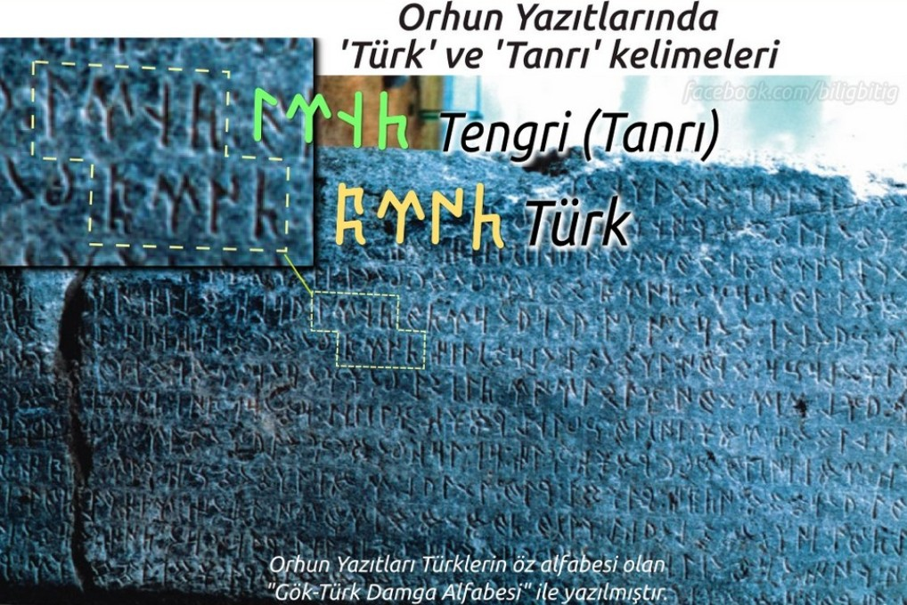
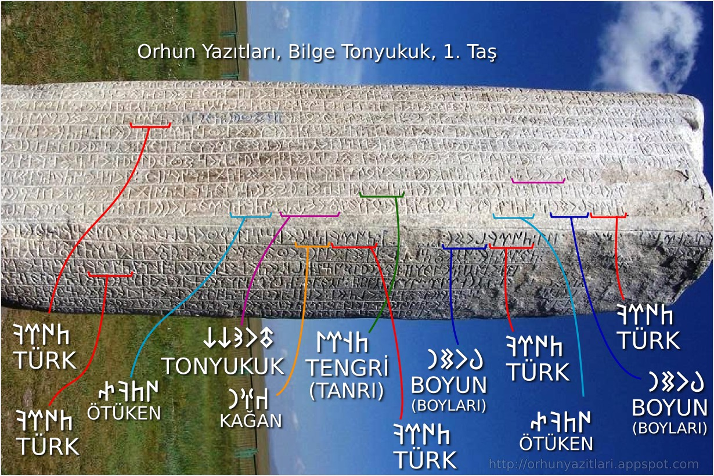
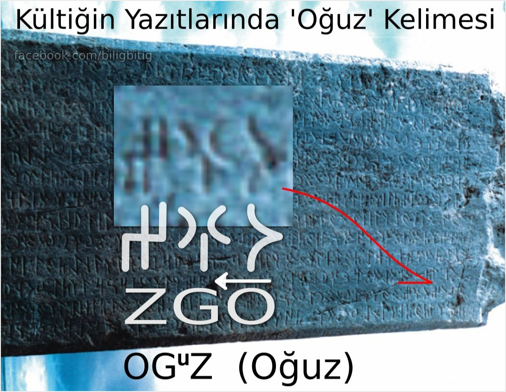
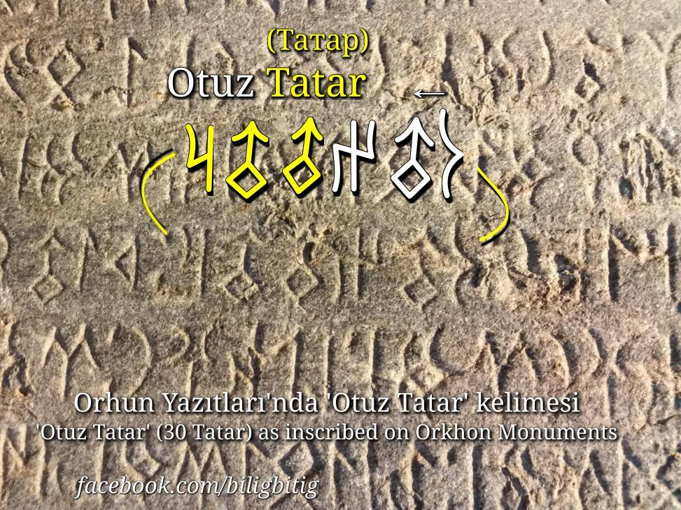
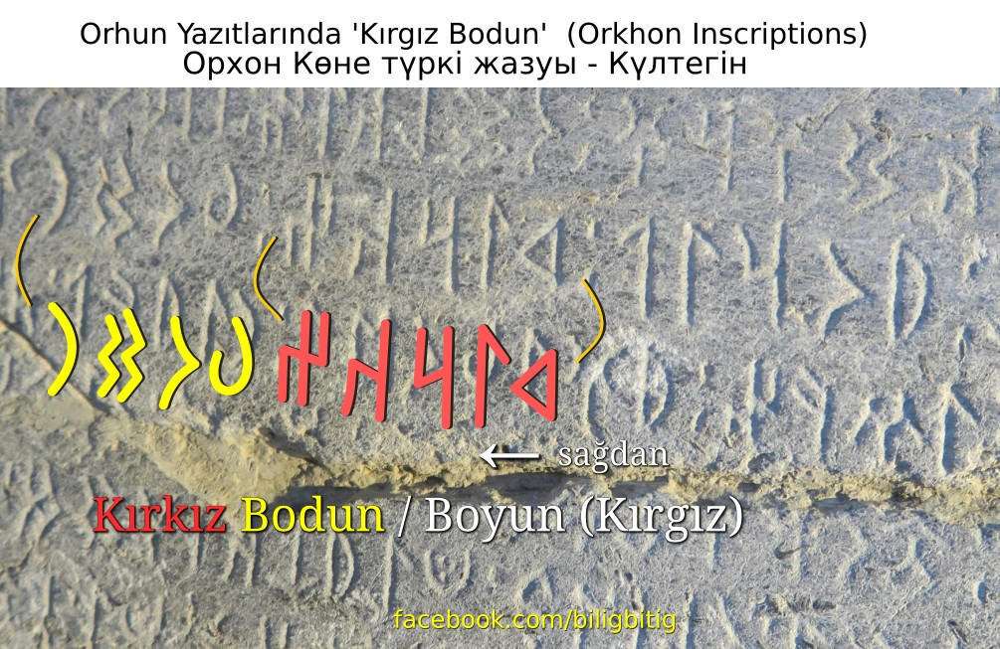
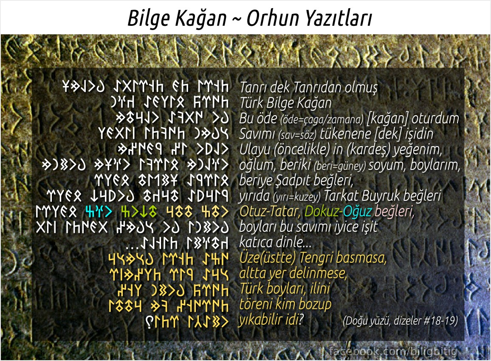
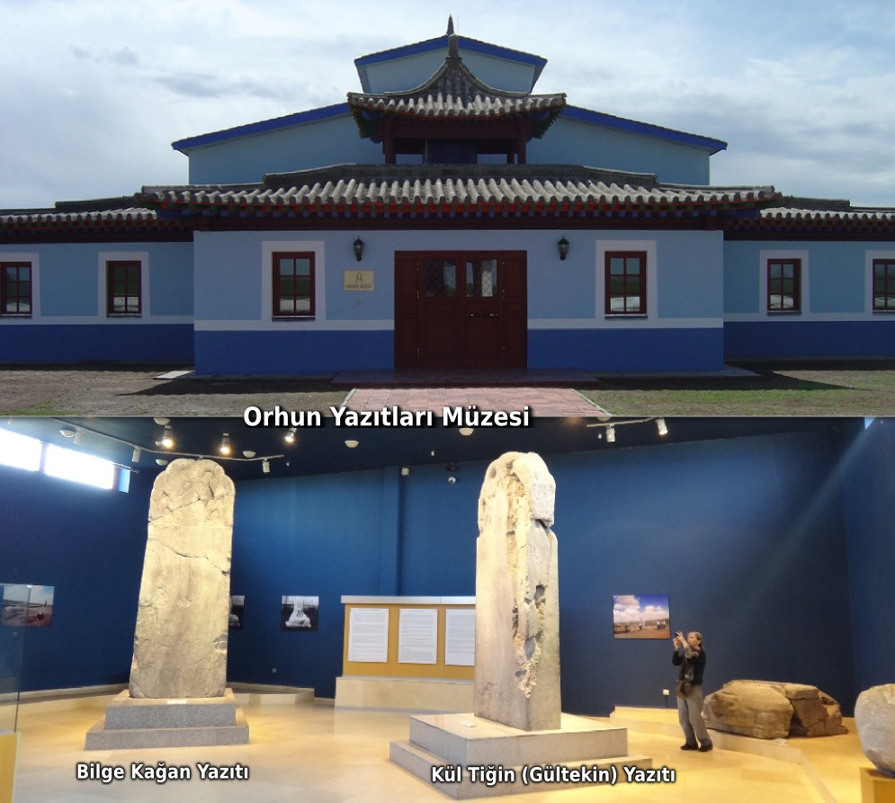
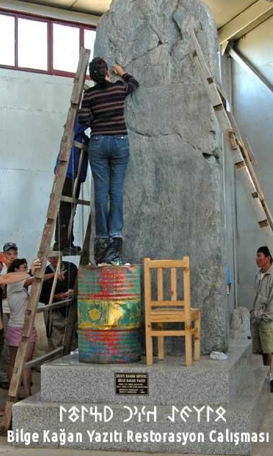

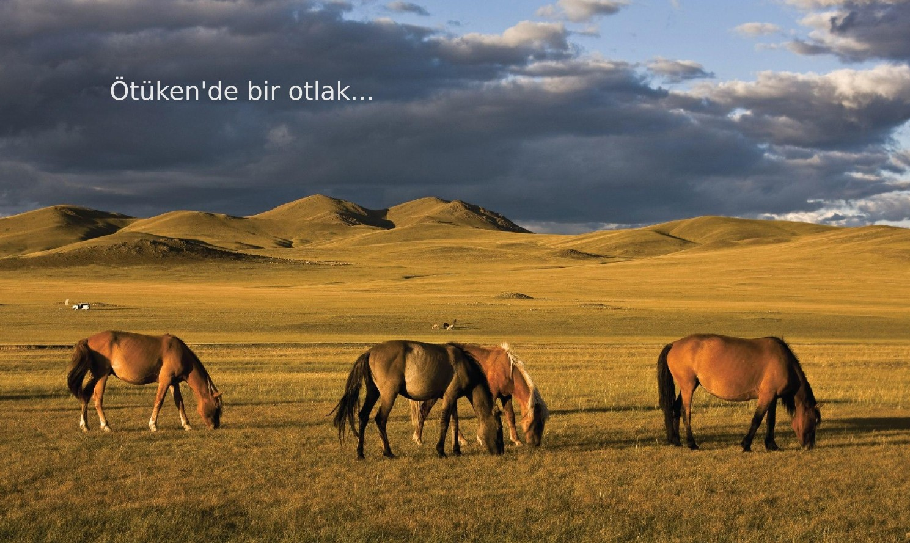
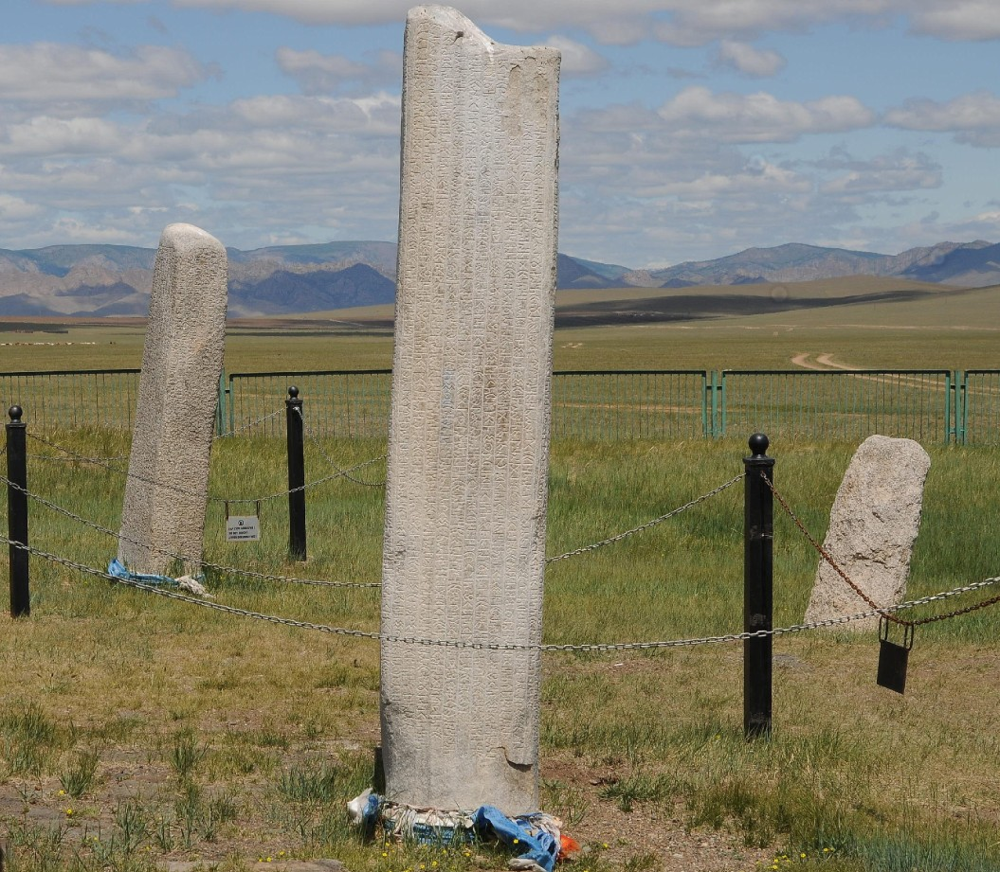
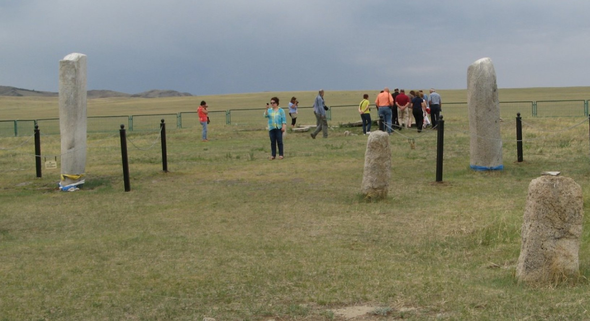


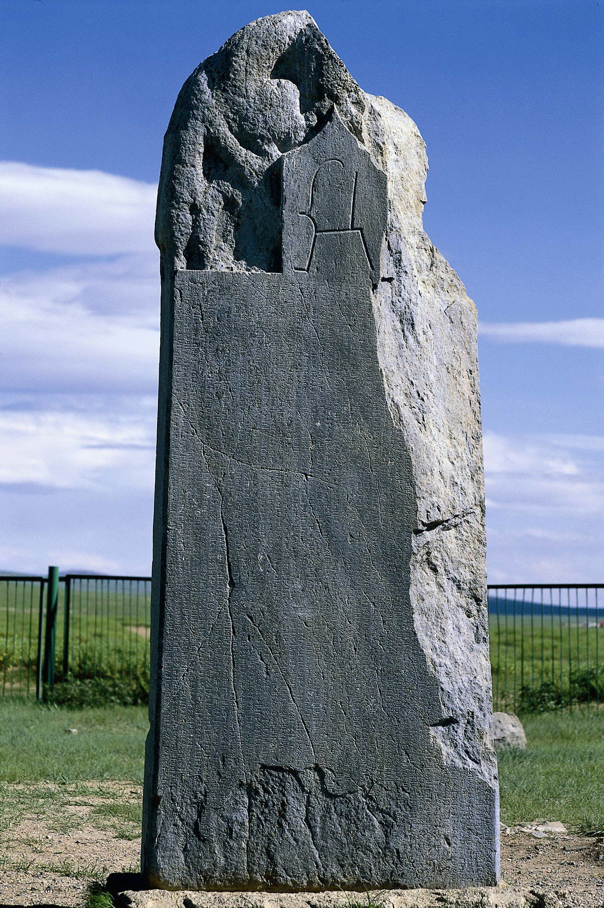
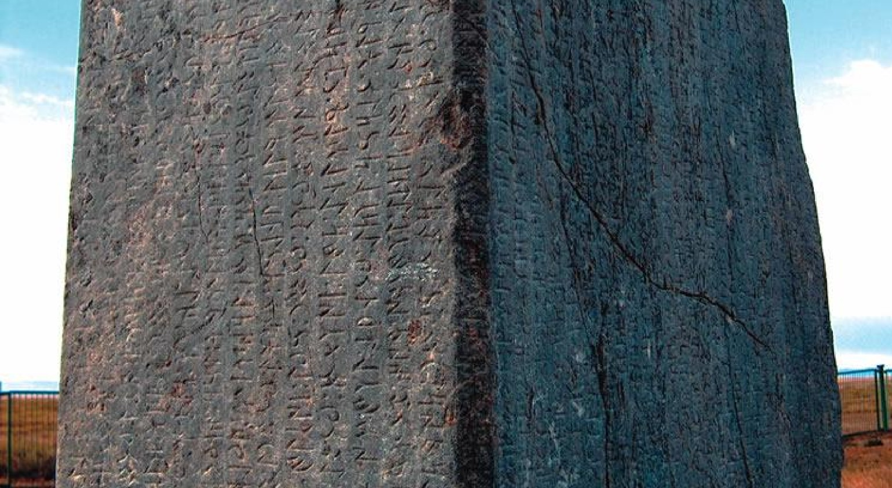
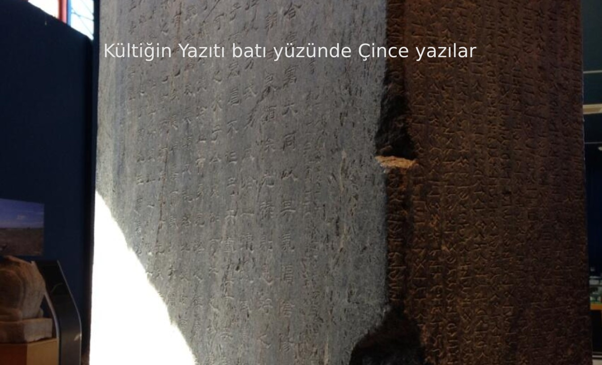
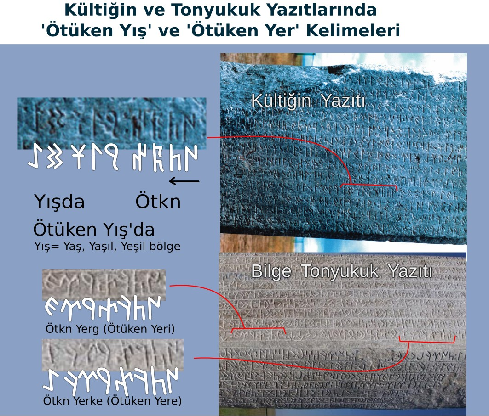